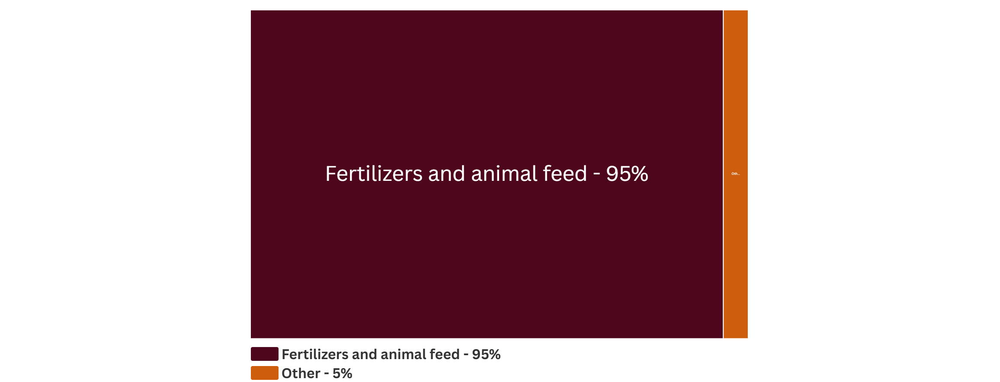
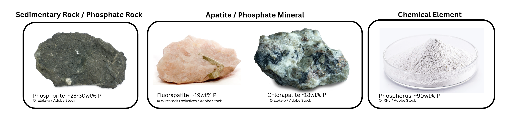

Most phosphate rock is transformed into phosphoric acid for chemical production, namely the synthesis of fertilizers. Phosphate deposits is a phosphorus-containing ore. There are three major types of phosphate ore, like sedimentary phosphorite, guano, and igneous apatite.
In 1669 elemental phosphorus, was accidentally synthesized by a German physician, Hennig Brandt, who believed gold could be made from distilled urine. The importance of phosphorus in fertilizer was chemically studied in 1840 by German chemist Justus von Liebig. Before phosphate fertilizers could be industrially produced, guano was heavily mined from the eastern coast of South America throughout the 19th century. Guano is produced through the gradual mineralization of seagull excrement and was predominately acquired through slave labor. The guano was exported to northern countries that lacked arable land. In 1942 John Bennet Lawes, an English agriculturist, patented a method to make fertilizer by mixing ground phosphate rock with sulfuric acid. Five years later, England began to industrially mine phosphate rock.
It has since been identified that Morocco and the Western Sahara host 70% of the world’s phosphate rock deposits. Today phosphorus mining has shifted to focus acquiring sedimentary phosphorite ores which are characterized by the presence of phosphate anion (PO₄³⁻) with either a halide (typically F⁻ to form fluorapatite or Cl⁻ to form chlorapatite), hydroxide (OH⁻), or carbonate (CO₃²⁻).
Most phosphate is mined via a surface method called open pit mining. First, between 35-50 ft of soil above the mineral deposit is excavated to expose the phosphate ore. The phosphate ore is then excavated by draglines which has a large bucket that scoops the ore as its operated with cable tension. The ore is piled and the hauled to be mixed with water to form a slurry that is milled. The milled slurry is washed and filtered to remove impurities like sand. Hydrocarbon-based reagents are added to the slurry which selectively adsorbs to the phosphate particles. This mixture is sent to a froth flotation unit where air is pumped through the liquid. As the air bubbles, the adsorbed phosphate particles rise to the surface as a mineral rich froth which is skimmed off. The phosphate froth is sent to a thickening unit that removes the water. The dried concentrate is transported to a chemical plant. Here, sulfuric acid is mixed in to the concentrate to form phosphoric acid. Phosphoric acid is reacted with ammonia (NH3) to create industrial scale produced fertilizers.
What is phosphorous used for?

Figure 1: Industrial uses of nickle. Data source: USGS National Minerals Information Center, 2025.
What do some phosphate minerals look like?

Figure 2: Different types of phosphorous containing materials.
Where are phosphorous mineral deposits?

Figure 3: Global phosphate rock reserves as reported by the USGS. Data is from https://mrdata.usgs.gov/general/map-global.html
Where is phosphate rock mined?
Scroll with your mouse or touchpad over the tagged locations on the map to zoom in/out.
Who imports phosphates?
Click on the blue bubbles to see where gold is imported from.